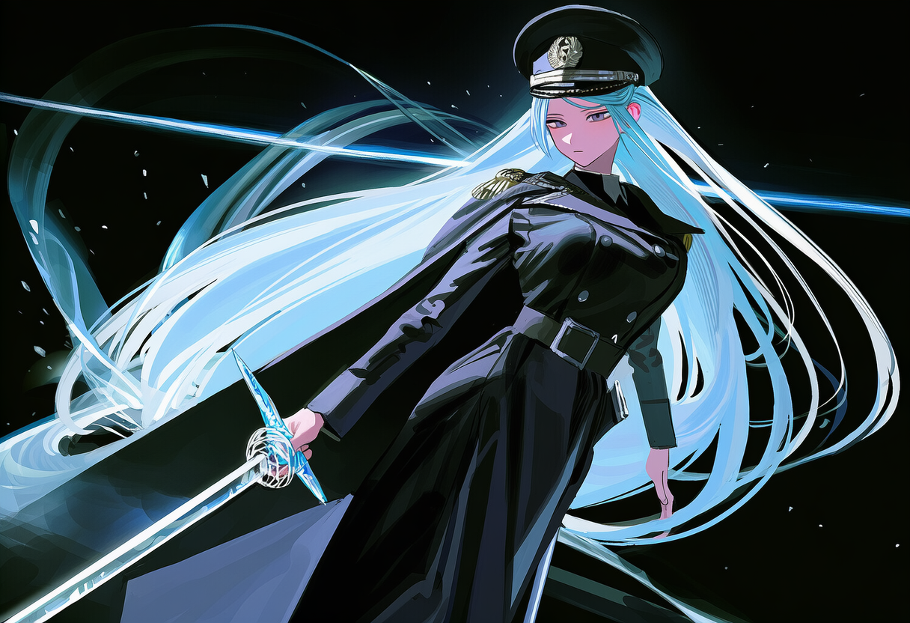
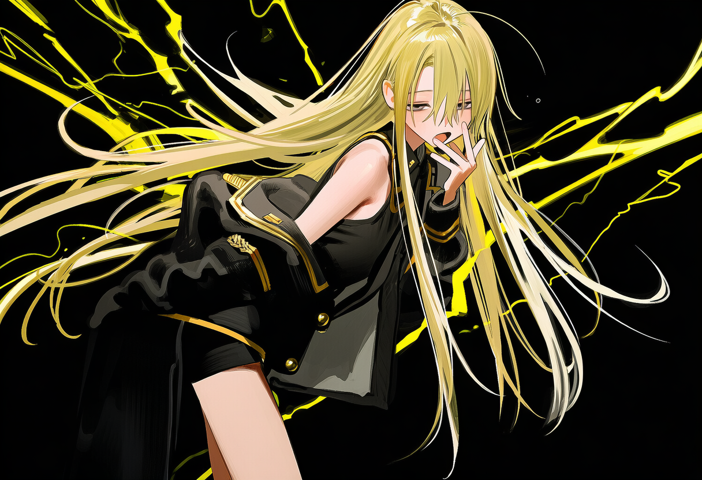

FIRNIMAGE PENDING피른
S CLASS · GLACIES전장 전체를 얼려 이동과 공격 범위를 통제하는 얼음 속성 뱅가드. ARCH 설립 초기에 막대한 후원과 기반 시설을 제공한 재벌가의 일원으로, 가문의 역사적 기여와 본인의 압도적인 능력 제어력을 함께 인정받았다. 봉쇄와 방어, 대규모 인원 보호가 필요한 작전에서 중심축을 맡는다.
알파팀은 뱅가드 가운데 아크 프리마의 직접적인 추천과 승인을 통해 임명되는 최고 명예 편제이자 비상 집정기관이다. 능력의 강도만이 아니라 ARCH에 남긴 공적과 기여, 기관의 권한을 대신 행사할 수 있는 신뢰까지 증명한 이들만이 이름을 올린다.
알파팀은 가장 많은 임무를 수행한 뱅가드나 단순히 출력이 높은 S급을 모아 만든 전투조가 아니다. 구성원 전원은 일반 요원을 압도하는 능력 숙련도와 정밀 제어력을 갖추고 있지만, 그것은 알파팀에 거론되기 위한 최소 조건에 불과하다.
임명 과정에서는 고난도 임무 해결 기록과 민간 피해 억제율, 위기 상황에서의 판단뿐 아니라 ARCH의 설립과 확장, 자산과 기술 확보, 국제 협력, 후배 양성, 지부 간 이해관계 조정처럼 기관 전체에 남긴 기여가 함께 검토된다. 알파팀의 이름은 강함에 대한 포상이 아니라 ARCH가 자신의 권한을 맡길 수 있다고 선언하는 공적인 보증에 가깝다.
이들은 상시 한 조로 움직이지 않는다. 각자의 전문 분야와 성향에 따라 독립적으로 활동하며, 현장 임무를 중심으로 움직이는 인원과 기관 운영·전략·대외 협력에 깊이 관여하는 인원이 공존한다. 다만 중대한 위기가 발생하면 흩어져 있던 알파의 권한이 하나의 지휘 체계로 전환된다.
능력은 입장권에 불과하다. 알파의 이름은 ARCH라는 조직의 일부를 맡겨도 되는 자에게만 허락된다.
알파 프로토콜은 국가 단위의 재난, 복수 지부가 얽힌 작전, 지휘 체계 단절, 프리마의 즉각적인 개입이 어려운 특수사항이 발생했을 때 활성화되는 비상 권한 체계다. 프로토콜이 발령되면 현장에 도착한 알파팀 구성원은 기존 책임자의 소속과 직급에 관계없이 지휘권을 인계받는다.

FIRNIMAGE PENDING전장 전체를 얼려 이동과 공격 범위를 통제하는 얼음 속성 뱅가드. ARCH 설립 초기에 막대한 후원과 기반 시설을 제공한 재벌가의 일원으로, 가문의 역사적 기여와 본인의 압도적인 능력 제어력을 함께 인정받았다. 봉쇄와 방어, 대규모 인원 보호가 필요한 작전에서 중심축을 맡는다.
기류와 압력의 미세한 변화를 포착하고 전장의 흐름을 설계하는 바람 속성 뱅가드. 넓은 범위의 정찰과 이동 경로 확보, 공격 궤도 수정에 특화되어 있다. 현장 판단과 독립 행동 능력이 뛰어나 지휘 체계가 단절된 상황에서도 작전을 재구성할 수 있다.

REMIMAGE PENDING전기 자극으로 신경계와 뇌파에 간섭하는 번개 속성 뱅가드. 대인 제압과 핵심 표적 무력화에서 대체가 어려운 전력이며, 위험성이 큰 능력을 정밀하게 통제하는 기술 자체가 최고 수준의 평가를 받는다. 평소에는 방전된 듯 느슨하지만 실전에서는 판단과 반응 속도가 극단적으로 상승한다.
세 사람은 친밀감이나 일체감으로 유지되는 전투조가 아니다. 각자가 독립적으로 완성된 전력이며, 다른 구성원의 독단적인 선택까지 자신의 전술 안에 포함시킬 수 있기 때문에 같은 이름 아래 놓였다. 알파팀의 결속은 관계가 아니라 권한과 책임에서 발생한다.
ARCH 내부에서 알파팀은 뱅가드와 아크 프리마 사이에 놓인 별도의 계급이 아니다. 평시에는 각자의 역할을 수행하는 뱅가드이지만, 기관 전체가 하나의 결정을 필요로 하는 순간에는 프리마의 권한을 현장에 전달하는 집정관으로 기능한다.
이들의 존재는 ARCH가 단순히 강한 능력자를 전장에 투입하는 기관이 아니라는 사실을 보여준다. 알파의 이름을 가진다는 것은 힘과 실적뿐 아니라 기관의 역사와 이해관계, 책임까지 함께 짊어진다는 뜻이다. 뱅가드가 강한 자에게 주어지는 직급이라면, 알파는 ARCH의 권력을 맡길 수 있는 자에게 주어지는 자리다.